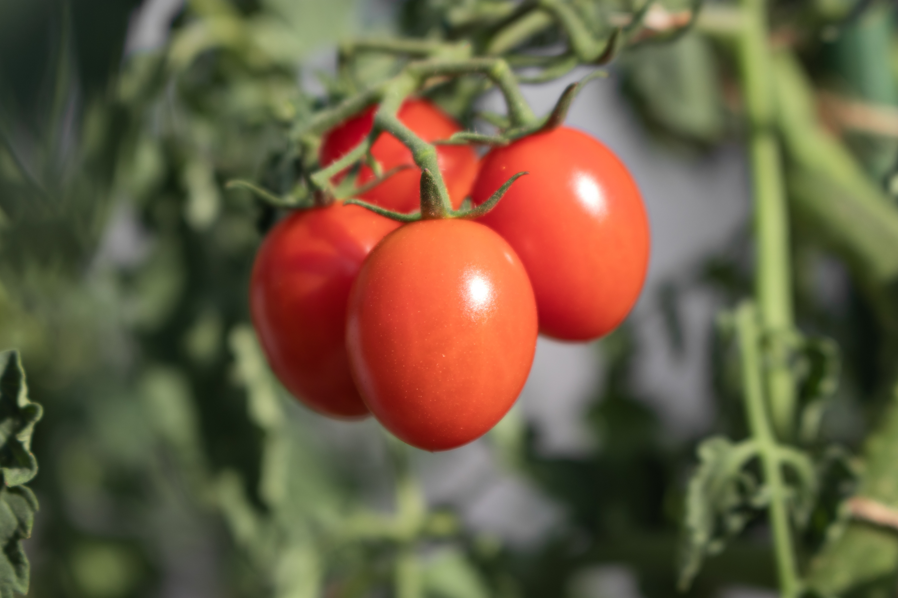

Tomato
Best Tomato Planting Practices: Tomatoes grow best in temperatures between 15°C to 35°C. Temperatures below 10°C and above 40°C can significantly affect the growth and development of tomatoes.Tomato seeds should be sown in a nursery bed and transplanted to the field when they are between 6-8 weeks old. The spacing between tomato plants should be 60cm to 90cm apart, while the spacing between rows should be 90cm to 120cm apart.
Best Fertilizers for Tomato Farms: Top-dress the plants after 4 weeks with CAN or UREA at 50kgs per acre. Keep the field free from weeds particularly in the first 30 days. Avoid hand weeding as this may destroy the delicate roots. Apply AMBAR at 30ml/20ltrs between the rows and plants, to suppress any seed weeds before they sprout, and to kill any growing broad-leafed weeds. Use the appropriate nozzle for best results. AMBAR works best when weeds are not higher than 4 inches and smaller than the tomato plants. During flower set, apply another dose of Harmony 30-40ml/20ltrs targeting the flower buds. You can also mix with soluble foliar fertilisers which have high potassium and calcium. This will avoid calcium end rot and other related fruit diseases later on, as well as protect against flower/fruit abortion. After flower set, avoid fertilizers which are rich in nitrogen, eg CAN, NPK, Urea. Irrigate to keep the soil moist, without being soggy or muddy. An irrigation cycle of twice a week using 10,000 to 20,000ltrs per acre is usually sufficient for tomatoes.
Pest management for Tomato: Scout for signs of Blight, Mildew, Canker. Be careful especially during cool wet conditions when blight is most active. Apply an early spray of Stage 20ml/20ltrs as a precaution against blight, and repeat after 7 days if conditions are cold and wet. Scout for any signs of disease after this, and apply Stage 250 EW in weekly intervals if noticed. Mix every application with Harmony 30-40ml/20ltrs to aid plant vigour, and recovery from stress. Check for signs of insect damage every day particularly in warm dry conditions. The most serious pests include spider mite, leaf minor (tuta absoluta), thrips, whitefly, caterpillars and aphids. All of these can cause serious damage and should be controlled as much as possible. Also, check vegetation around edges of the field. Spray JACKPOT 12.5 ml/20Ltr to control aphids, and worms, particularly at fruit set, before the moths can lay their eggs on the fruits. Spray a mix of ROMECTIN 20ml/20ltre, and IMAXI 12.5ml/ltr to control stubborn leaf minors and red spider mites. Spray BAMAKO 5gms/20ltrs on the crop in the evening and around the edges of the field to control whitefly.
Storage techniques for Tomato: The tomatoes should be ready for harvesting as from the 70th day onwards depending on the variety planted. Remove the ripe fruits from the stems carefully and place in clean disinfected containers ready for transport.